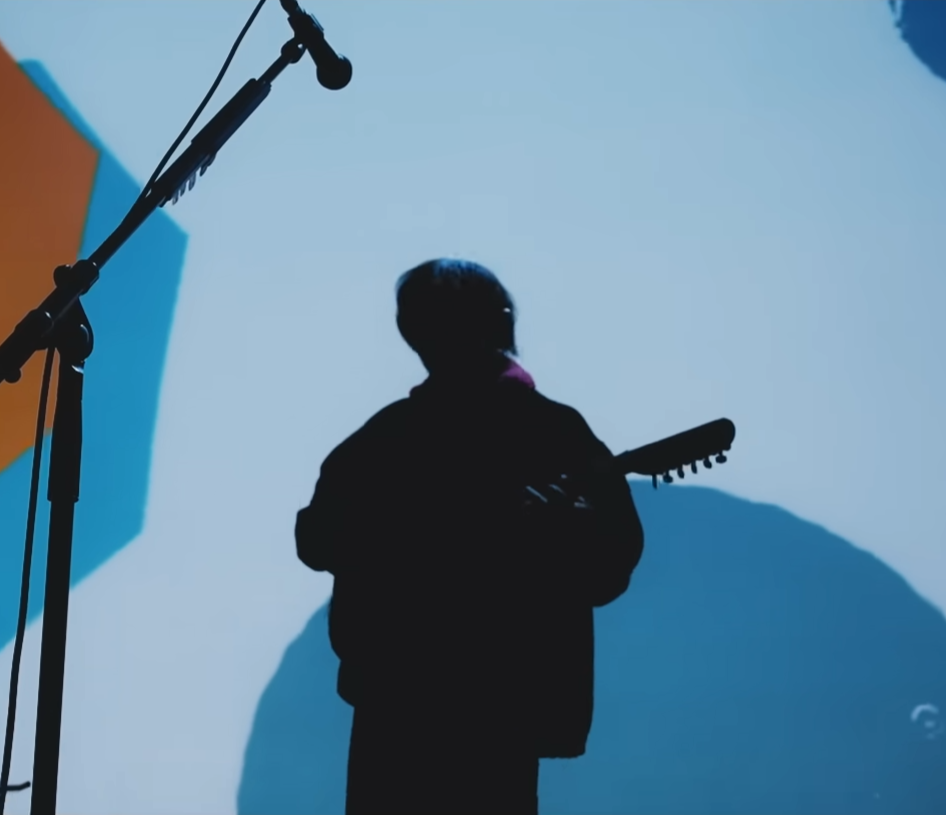
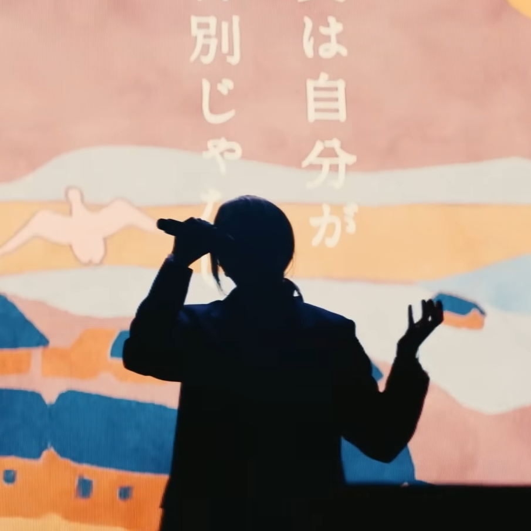

ヨルシカ
is a Japanese rock duo founded by vocaloid producer, "n-buna" and female vocalist "suis" debuting in 2017. Yorushika's music primarily consists of a mixture of J-Rock, J-Pop, and even infusing elements of Jazz.
They are known for primarily for focusing on heavy, emotional lyricism and themes while still providing "upbeat" instrumentals.
History
Before Yorushika's formation, n-buna, a vocaloid producer, was releasing music to Japan's version of Youtube, Niconico, in 2012. Under his solo work, he released 3 Albums and quickly became one of the most popular vocalaid producers on Niconico.
Because vocaloid vocals were electronically made, he felt that vocaloids lacked the emotion and "human" voice that his work needed. Through an acquaintance that n-buna had met, he formed a duo group with a female vocalist that goes by the name of "Suis",
to form the band Yorushika. Together, with supporting members, Yorushika would release three extended plays, and three albums and become one of Japan's most listened bands.
Despite the band's rise in fame across Japan, the duo is extremely secretive and has never revealed their appearances to the public.
Regardless, the band has gone on multiple tours, using a no-image policy and even using clever stage backlighting to obscure their faces.
n-buna

n-buna performing at Zense 2023
n-buna, or pronounced as nabuna, was born in 1995 in Gifu, Japan. His family all played instruments and in 8th grade, he bought an electric guitar. He started to write music, but did not release them, until the introduction of vocaloid.
Vocaloid is essentially a voice synthesizer software that mimics a human's singing voice. By using pre-recorded human voices and singing, the software can take essential vowel and consonant sounds
and output an electronic voice. In 2012, n-buna would start composing as a vocaloid producer, releasing his first single. His music consisted of emotional lyrics
and a striking melody around the guitar which would go over to Yorushika's music as well. From 2014 to 2016, he would release three vocaloid albums, becoming one of the popular composers in the vocaloid scene.
After forming Yorushika, majority of his work would be geared towards Yorushika, with occasional writing and composing credits to other artist. He would also later release a few singles as a solo artist.
n-buna's writing and composing style focuses on ideas such as love, the human emotion, and makes music his literal art. He writes his albums in a way that all the songs
in a album are a part of an overaching story. Albums "That's Why I Quit Music" and "Elma" are two separate albums, but are intertwined from the perspectives of Amy and Elma writing and reflecting to each other.
Suis

Suis performing at Moon and Cat Dance Live Tour
Suis lives a private life, not much is known about her life before or after the formation of the band. She has revealed that in her teenage years, she was in poor health and
the band was a way of giving her a restart in life. Before meeting n-buna, she was actually a fan of n-buna's vocaloid work. Then Suis met n-buna, who was doing solo concerts at the time, through a mutual friend.
After meeting, they would eventually record "Hana Furashi", for a radio theme song and is believed to be the duo's first song performed together. At first, n-buna had asked Suis to sing exactly how he had composed the song, usually in a higher pitch than her natural range.
However as time went on, n-buna would start to work around Suis' vocal range, lowering the pitch giving her free reign in how she sings. Now shes known for having incredible range, being able to hit low notes for female and perform high notes as well.
And as of recently, Suis has mostly done her performances under the group of Yorushika, but beginning in 2020, she debuted as a solo artist, performing features for other Japanese artists and even singing in Japanese commercials.
Fun Fact
When Suis had joined Yorushika, n-buna asked her to learn the guitar so that the band can have a singer that also plays the guitar. But after a short time, she wanted to quit and begged n-buna and his manager to allow her to sing only, which they did. This would then ironically enough inspire one of the band's greatest hits, "That's Why I Gave Up On Music"